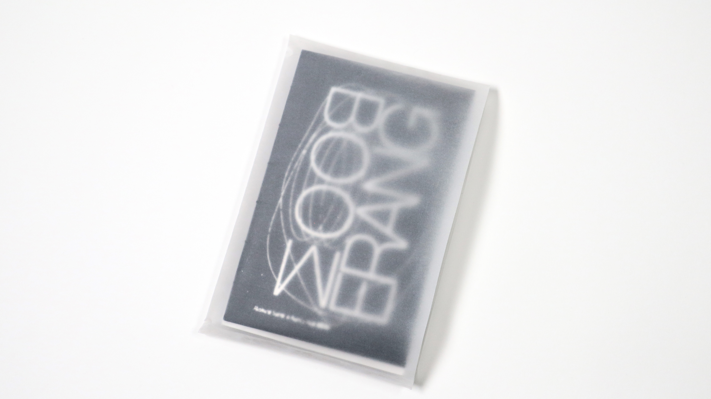
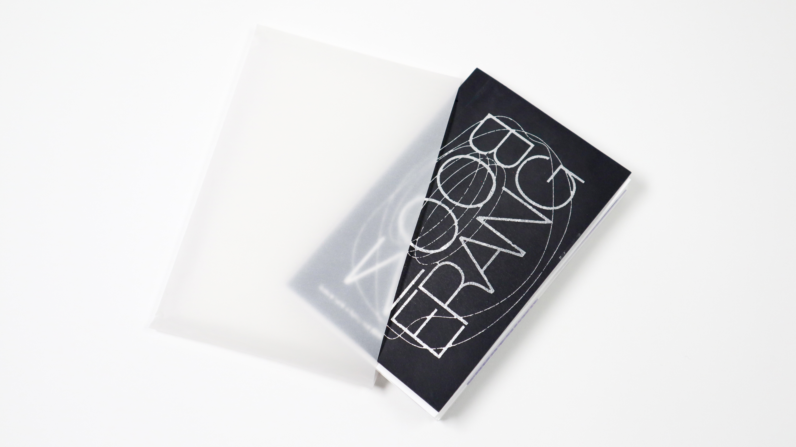
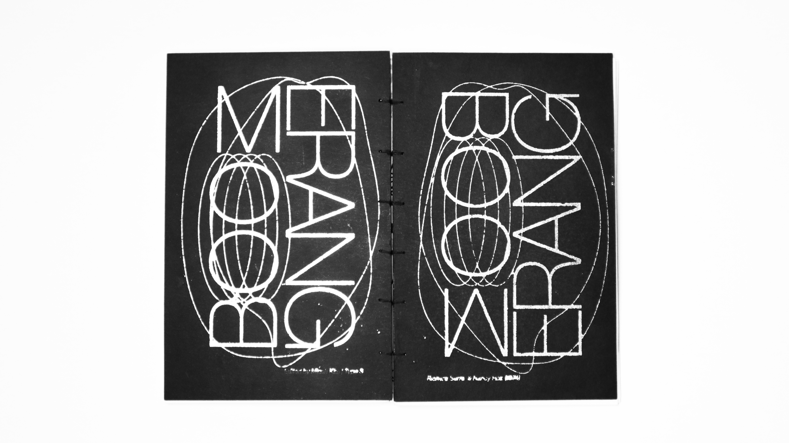
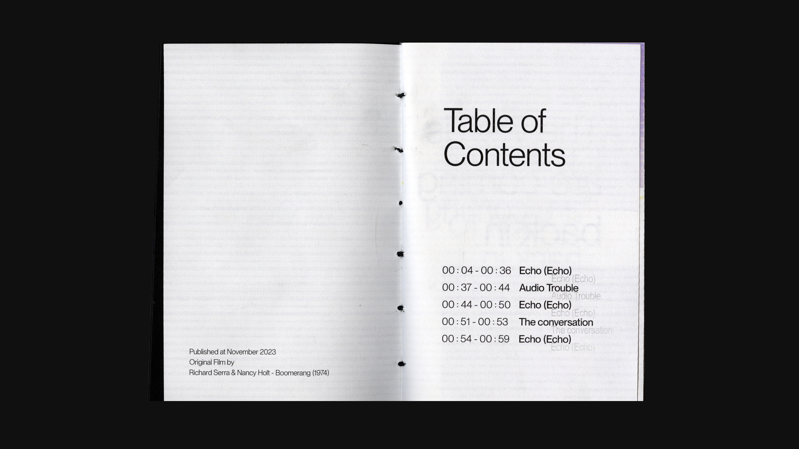
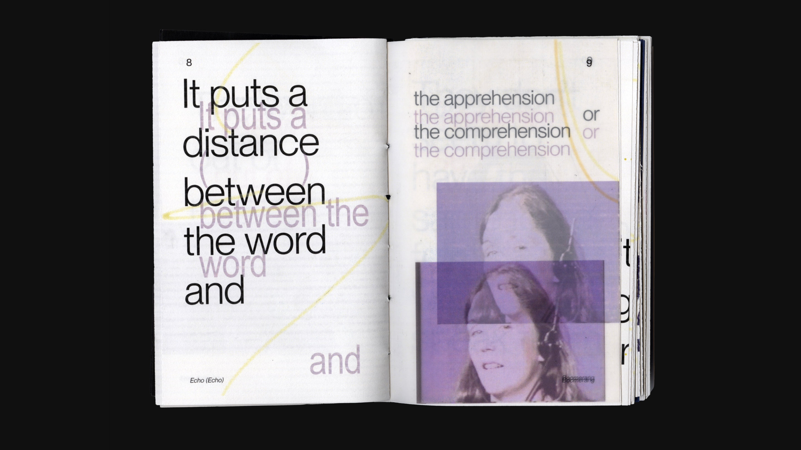
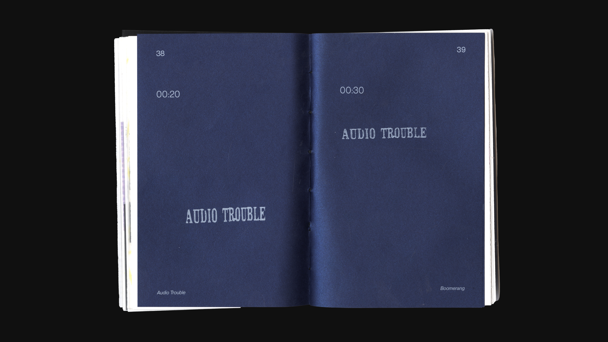
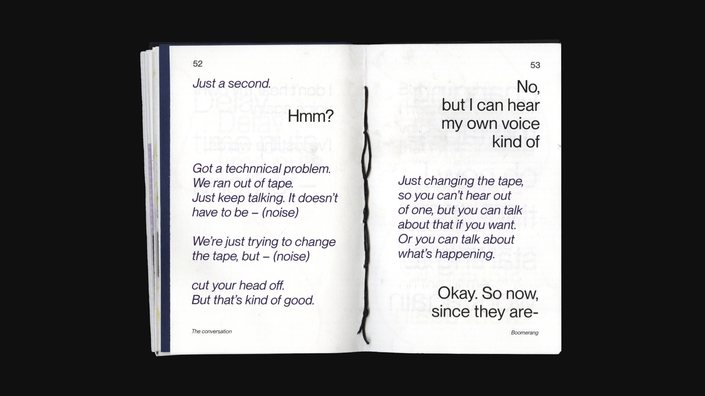
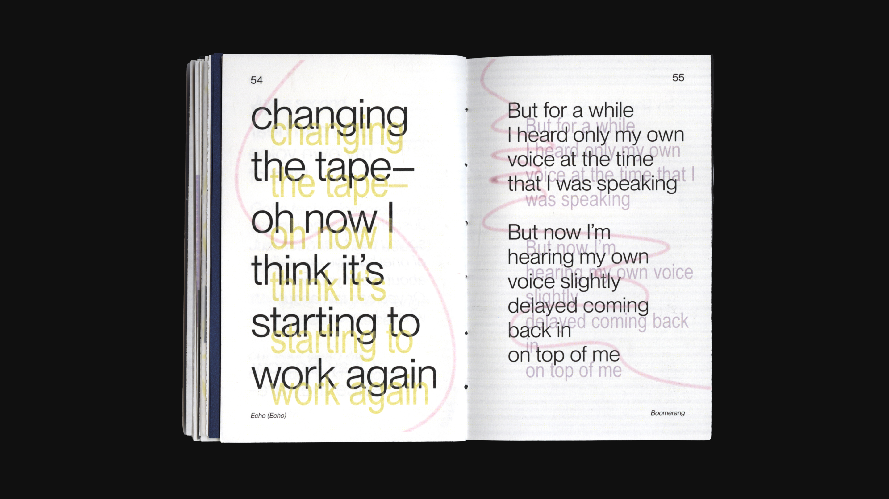

Boomerang
2023
Publication
Print
This book is a translation of Boomerang, an experimental film made by Richard Serra and Nancy Holt in 1974, to a printed matter. To translate the delaying and echoing of the audio of the film, I repeated the dialogue on every page, except when there was an audio trouble and the echoing effect was gone for a minute. In some pages, I added vellum paper that had slightly offset text and image to emphasize the echo. Also I tried applying various printing techniques here, such as coptic binding, silver foil laminating, white ink printing, and combined use of different types of paper.







